NHS North West Genomics
0.2.2 - ci-build

NHS North West Genomics
0.2.2 - ci-build

NHS North West Genomics, published by NHS North West Genomics. This guide is not an authorized publication; it is the continuous build for version 0.2.2 built by the FHIR (HL7® FHIR® Standard) CI Build. This version is based on the current content of https://github.com/nw-gmsa/nw-gmsa.github.com/ and changes regularly. See the Directory of published versions
| Actor | Definition |
|---|---|
| Order Placer | Commonly known as the Electronic Patient Record (EPR) System or Order Communications System |
| Order Filler | Genomic Laboratory Hub (GLH), Laboratory Information System (LIMS) |
| Automation Manager | Performed by Laboratory Information System (LIMS) |
| Order Result Tracker | This is often provided by Electronic Patient Record (EPR) Systems |
| Laboratory Report (Clinical Document) | See Clinical Document |
| Intermediary | E.g. Regional or Trust Integration Engine |
See also Ref A Section 3 Laboratory Testing Workflow (LTW) Profile for detailed description of actors.
IHE LTW Actor Diagram
Initially only the IHE LAB-1 and LAB-3 is in focus.
Later stages will include the use of Genomic Order Management Service.
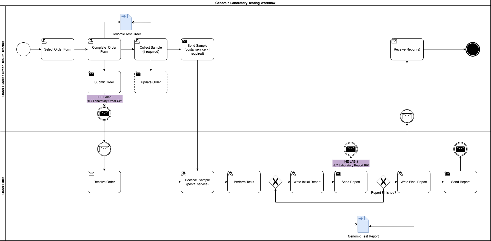
Genomic LTW Business Process
The sample may not need collecting by the ordering clinician for 2 reasons
- it has already been sent to the GLH and extracted DNA is already stored there
- the sample is somewhere else in the country. In this instance the ordering clinician will need to arrange the sample transfer to the GLH.
The processes above are described in more detail in:
From a high level perspective the process is
Genomics Simplified Sequence Diagram
Where the Order Placer sends the Laboratory Order to the Order Filler, the lab performs the test and then sends the Laboratory Report back to the Order Placer. However, variations can exist such as the order is updated or the order is entered directly on the Order Fillersystem (these are currently out of scope).
graph TD;
OrderPlacer["<b>Order Placer</b><br/>(EPR or Order Comms)"] --> |1. Send Genomic Laboratory Order<br/>HL7 v2 ORM_O01 or OML_O21| OR[Acute Hospitals<br/>Trust Integration Engine]
OrderPlacer --> |"2. Asks for (Order)"| SpecimenCollection
SpecimenCollection[Specimen Collection] --> |3. Sends Specimen| OrderFiller
OR --> |"1a. HL7 FHIR Message O21<br/>(IHE LTW)"| RIE[Middleware<br/>Regional Orchestration Engine]
RIE --> |"1c. Send Genomic Laboratory Order<br/>HL7 FHIR Message O21<br/>(IHE LTW)"| CDR[NW Genomics<br/>Clinical Data Repository]
CDR --> |1d. Send FHIR Event Notification| Any["Any <br/>(future)"]
RIE --> |"1b. Send Genomic Laboratory Order<br/>HL7 v2 OML_O21<br/>(IHE LTW)"| EHRTIE[NW Genomics<br/>Laboratory Information Management System]
RIE --> |"1b. Send Genomic Laboratory Order<br/>FHIR Transaction<br/>via NHS England Genomic Order Management Service"| GOMS["External<br/>Laboratory Information Management System<br/>(Future)"]
EHRTIE --> OrderFiller[<b>Order Filler</b>]
GOMS --> OrderFiller
classDef green fill:#D5E8D4;
classDef yellow fill:#FFF2CC;
class RIE green;
class OR green;
class CDR yellow;
An order is created by the clinical practice and placed to the laboratory.
Genomics Test Order Activity
Within the system creating the genomics order, the practitioner will select a form for the test required. Below are several examples from North West Genomic Laboratory Hub - Test Request Forms. How this is implemented will vary between different NHS organisations and systems they use.
|
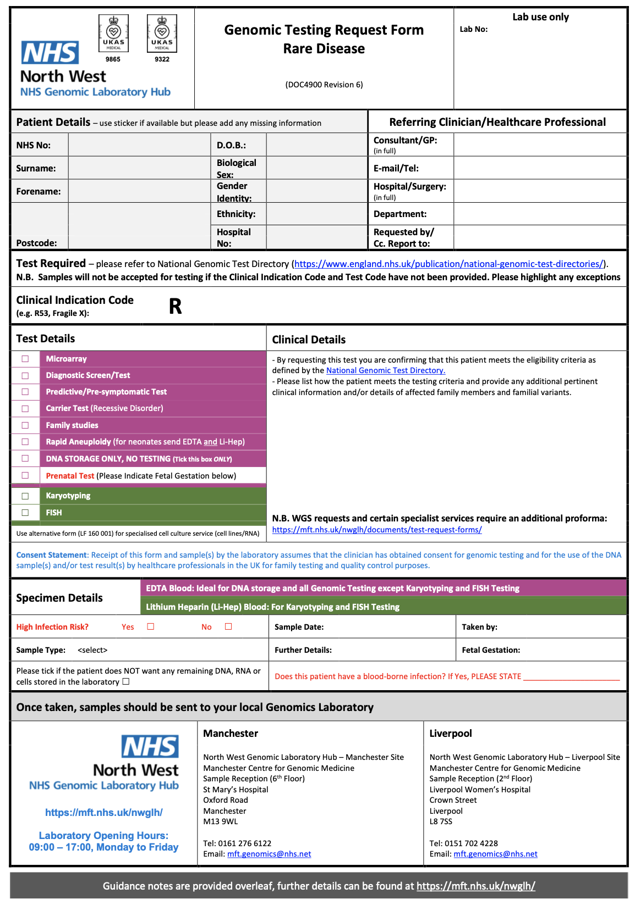 NW GLH Genomic Testing Request Form – Rare Disease |
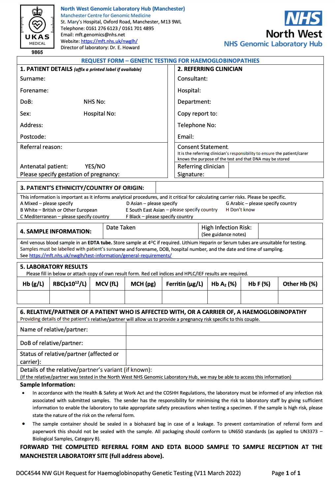 Request for Genetic Testing for Haemoglobinopathies |
These forms may (/will?) will have a computable definition called an template (FHIR Questionnaire) which will list the technical content requirements for the form. At present only one archetype has been defined:
This archetype definition can also support HL7 Structured Data Capture should the Order Placer system support these features.
The completed form is submitted to the Regional Orchestration Engine using:
Genomics Test Order Sequence Diagram - LAB-1
For submission, this form will be converted by the Order Placer to a communication format called HL7 FHIR (and for compatability reasons HL7 v2. If the Order Placer has a FHIR enabled Electronic Patient Record (e.g. EPIC, Cerner, Meditech, etc), they may use HL7 SDC - Form Data Extraction to assist with this process.
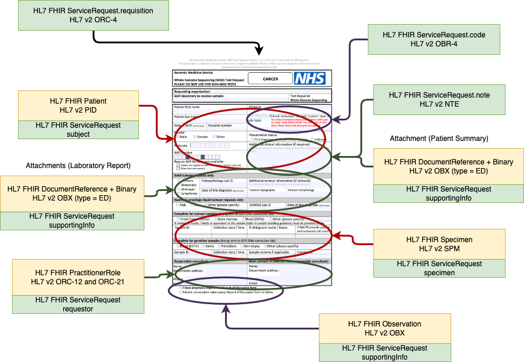
Order Test Form - Data Extraction Overview
The FHIR exchange style used FHIR Message following laboratory-order message definition. This definition is based on HL7 v2 OML_O21 Laboratory Order which simplifies conversion to/from pipe+hat (v2) and json (FHIR) formats.
At present, the NW GLH Laboratory Information Management System (LIMS) will not support HL7 FHIR. The Regional Integration Exchange (RIE) will perform conversion between v2 and FHIR formats.
This message is an aggregate (DDD)/archetype and so is a collection of FHIR Resources (similar to v2 segements) which is described in Genomic Test Order.
See also HL7 Europe Laboratory Report - ServiceRequest
This message can be extended by template (FHIR Questionnaire) which allows the definition of additional questions to be defined for the laboratory order.
The detail of this form/template defines:
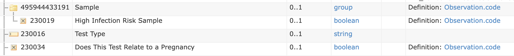
Order Text Form Example (extract)
| Question | CodeSystem | Code | FHIR Profile | HL7 v2 Segment | FHIR Questionniare item.type |
FHIR Observation value[x] |
v2 OBX-2 |
|---|---|---|---|---|---|---|---|
| Does This Test Relate to a Pregnancy | SNOMED | 77386006 | Observation | OBX | boolean | valueBoolean | CE (code 0136) |
| Sample | LOINC | 68992-7 | Observation-Panel | OBR | |||
| High Infection Risk Sample | SNOMED | 281269004 | Observation | OBX | boolean | valueBoolean | CE (code 0136) |
It is not expected the NW GLH Laboratory Information Management System (LIMS) will support UK SNOMED CT, and the RIE will handle the conversion either internally using FHIR ConceptMap or a terminology service with the following capabilities IHE Sharing Valuesets, Codes, and Maps (SVCM)
After submitting the original order, the sample will be collected and sent to the Order Filler. The Order Filler will update the Test Order to include details such as a specimen collection date, order filler number, etc.
This guide builds on the use cases described in the NHS England Pathology FHIR Implementation Guide, extending them to support a wider range of stakeholders and introducing standards for the Laboratory Order LAB-1.
Key differences include:
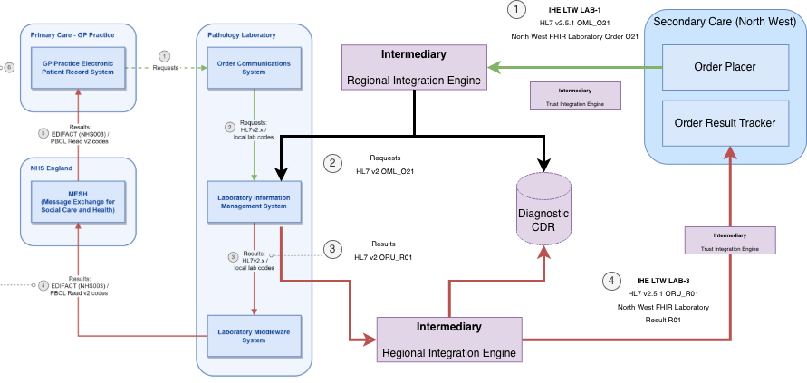
Relationship to NHS England Pathology
graph TD;
OrderFiller["<b>Order Filler</b><br/>Diagnostic Testing (LIMS)"] --> |"1. Sends HL7 v2 ORU_R01<br/>(IHE LTW)"| RIE[Middleware<br/>NW Genomics<br/>Regional Orchestration Engine]
RIE --> |"1a. Sends HL7 v2 ORU_R01<br/>(IHE LTW)"| TIE[Middleware<br/>Acute Hospitals<br/>Trust Integration Engine]
TIE--> |"1a. Sends HL7 v2 ORU_R01<br/>(IHE LTW)"| EHRTIE[North West<br/>NHS Trust<br/>EHR]
RIE--> |"1a. Sends HL7 v2 ORU_R01<br/>(IHE LTW)"| BOARD["NHS Wales<br/>Health Board<br/> (future?)"]
RIE --> |"1a. Sends FHIR Transaction<br/>via NHS England Genomic Order Management Service"| GOMS["NHS England<br/>NHS Trust<br/>EHR (Future)"]
RIE --> |1b. Sends HL7 v2 MDM_T02 or IHE XDS| ICSTIE[Integrated Care System <br/> Document Repository]
RIE --> |1c. Sends HL7 FHIR R4<br/>Message O21| CDR[NW Genomics<br/>Clinical Data Repository]
CDR --> |1d. Sends FHIR Event Notification| Any["Any <br/>(future)"]
GOMS --> OrderPlacer[<b>Order Placer</b>]
EHRTIE --> OrderPlacer
BOARD--> OrderPlacer
classDef green fill:#D5E8D4;
classDef yellow fill:#FFF2CC;
class RIE green;
class TIE green;
class CDR yellow;
A report is created by the clinical practice and sent to the order result tracker.
Genomics Test Report Activity
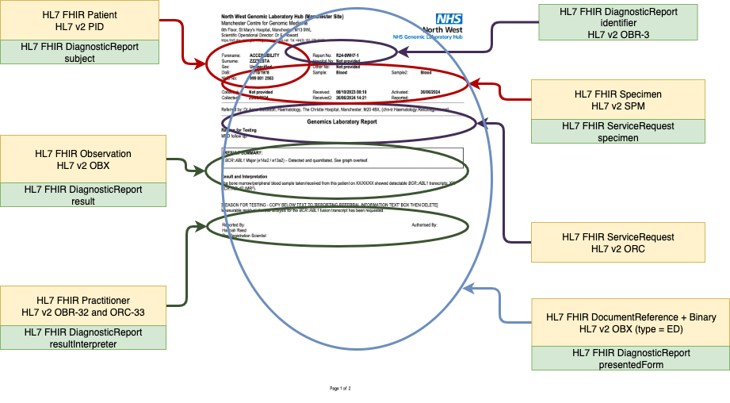
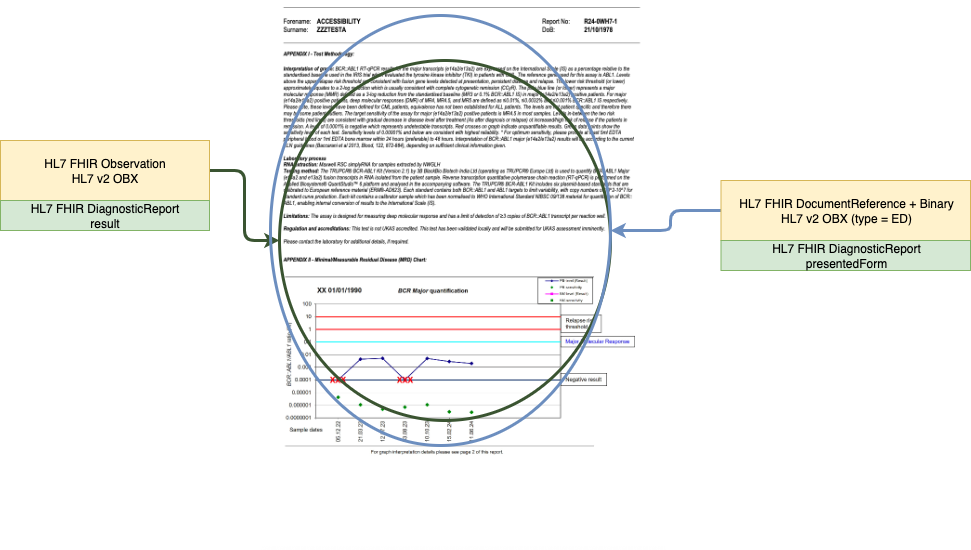
Genomic Report Example
Genomics Test Report Sequence Diagram - LAB-3
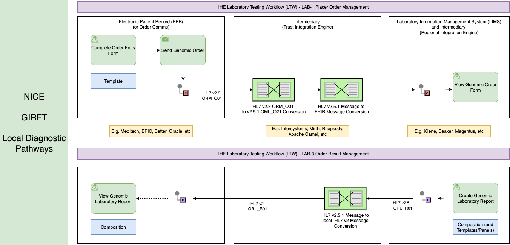
Genomic Order and Report Summary
Genomic Test Order and Report use cases form part of a broader diagnostic testing workflow, which is guided by:
These pathways are technically implmented and generally align with the IHE Laboratory and Testing Worflow LTW (for Imaging workflows see IHE Radiology (RAD))
Within EHR systems, test orders are usually created through an Order Entry Form (also referred to in health informatics as a Template). Reports are typically displayed in the EPR as a Composition (health informatics terminology).
Between the Order Placer (e.g., consultant and EPR) and the Order Filler (e.g., laboratory and LIMS), various intermediary systems are used. These are often called Trust Integration Engines (TIEs). The most widely used messaging standard is HL7 v2.
To modernise these workflows, the North West GMSA is also introducing FHIR. Alongside this, a regional canonical data model—compatible with HL7 v2, FHIR, and IHE XDS—is being developed. This model aims to reduce the need for multiple message transformations by establishing a common (regional) NHS core data standard.
This guide builds on the use cases outlined in NHS England Genomic Order Management Service FHIR API - Background, expanding them to support a broader range of participants and introducing standards for the Laboratory Order LAB-1.
Key differences include:
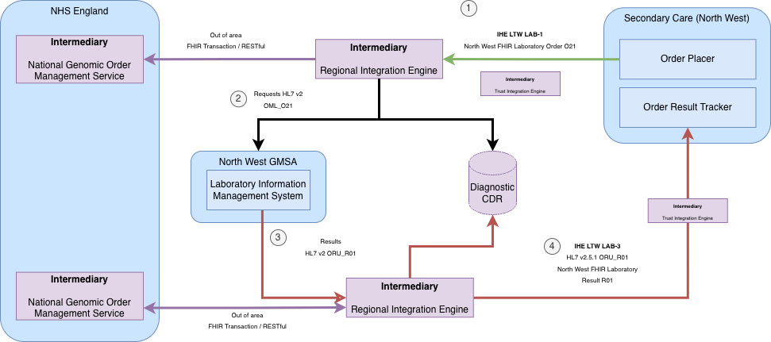
Relationship to NHS England Genomic Order Management Service
A reflex order in a laboratory is a process where a second diagnostic test (e.g. Genomics)) is performed on an existing patient sample based on the results of an initial test, without a new order from the physician (original Order Placer). This practice helps provide more comprehensive diagnostic information efficiently, potentially leading to quicker diagnoses and avoiding the need for another specimen collection.
graph TD;
subgraph Pathology["Pathology - Greater Manchester ICS"]
OrderPlacer[Order Placer<br/>e.g. MFT EPIC] --> |"1. Sends Laboratory Order (Pathology)<br/>ORM_O01 or OML_O21"| OrderFiller["Order Filler (Pathology)<br/>e.g. MFT EPIC Beaker or CFT Shire"]
OrderPlacer --> |"2. Asks for (Orders)"| SpecimenCollection
SpecimenCollection[Specimen Collection] --> |3. Sends Specimen| OrderFiller
OrderFiller --> |4. Send Laboratory Report<br/>ORU_R01| OrderPlacer
end
subgraph Genomics["Genomics - North West Region"]
OrderPlacerG["Order Placer (Pathology)"] --> |5. Send Laboratory Order<br/>OML_O21| OrderFillerG["Order Filler (Genomics)<br/>e.g. iGene"]
OrderPlacerG --> |6. Sends Specimen| OrderFillerG
OrderFillerG --> |7. Sends Laboratory Report<br/>ORU_R01| OrderPlacerG
end
OrderFiller --> OrderPlacerG
OrderFiller --> |8. Sends Laboratory Report<br/>ORU_R01| OrderPlacer
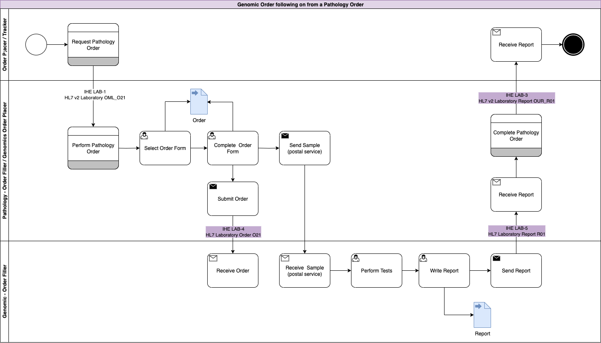
Genomic LTW Business Process - Use Case 3
In this use case the original order is raised by the Order Placer and sent to a Pathology LIMS (Pathology Order Filler). The Pathology LIMS follows the processes outlined in Use Case 1: Genomic Test Order and Use Case 2: Genomic Test Report for pathology testing.
As part of this testing, the clinical process requires a genomics test to be performed.
This genomics process is largely the same except for:
Multiple Diagnostic Tests - LAB-1 and LAB-3
This use case can often occur around cancer:
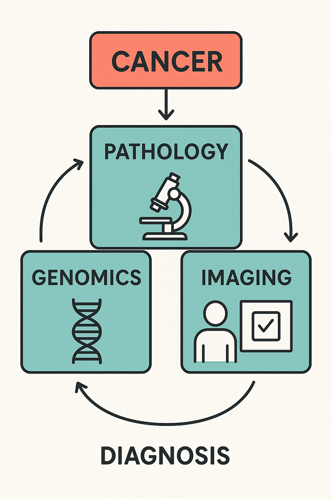
Cancer Diagnostics
The details of this are beyond the scope of this guide, for more details see Getting It Right First Time (GIRFT) Best Practice Timed Diagnostic Cancer pathways
For information on Genomic Tests on the bowel cancer cells, see macmillan.org.uk and NICE DG27 Molecular testing strategies for Lynch syndrome in people with colorectal cancer
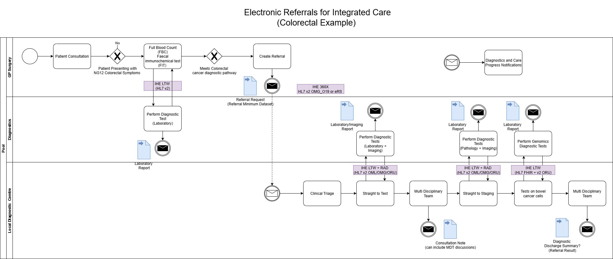
Colorectal Cancer Diagnostics and Patient Referrals
Work Order Management LAB-4
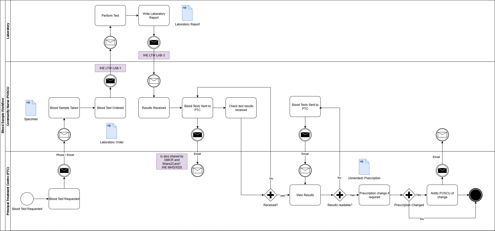
Genomic Order Notifications - Use Case 4
(From North West Children Cancer. This is centred around laboratory tests, genomic tests will have similar notification systems)
TODO - is OAuth2 based using client credentials flow.
This may include IHE Internet User Authentication [IUA] and IHE Basic Audit Log Patterns[BALP] which includes use of:
It is recommended that the actors receive patient demographic and encounter updates only within the context of a work order. Whenever patient data changes, due to:
Note: Event trigger definitions based on NHS England HL7 v2 ADT Message Specification which is NHS England's supplement to IHE Technical Framework Volume2: Patient Identity Management [ITI-30] and Patient Encounter Management [ITI-31].
It is common for this requirement to be answered by a combination of:
IG © 2024+ NHS North West Genomics. Package fhir.nwgenomics.nhs.uk#0.2.2 based on FHIR 4.0.1. Generated 2026-04-10
Links: Table of Contents |
QA Report
| New Issue | Issues
Version History |
 |
Propose a change
|
Propose a change